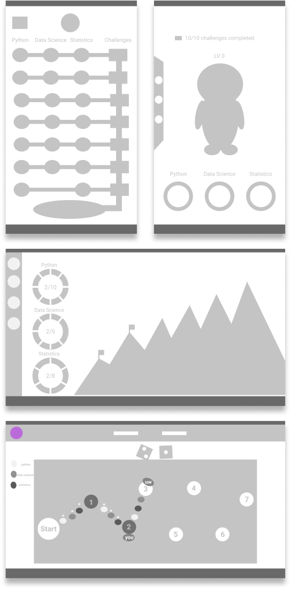

Started by a principal lecturer Bob boko, Skill It Up is a website for INFO 180 at University of Washington Information School designed as a
course specific website that aims to facilitate learning experience by gamifing the course with levels and challenges. The system utilizes
repetitions to expose the students to same concepts multiple times throughout the quarter and engages the students with clear sense of
progression.
Challenge
Design overhaul on a pre-alpha version of an already built website (provided by the client) to reduce confusions and distractions for enhanced
user-flow and focus on learning materials while maintaining game-like experience.
Discovery
The project was in a pre-alpha phase when Bob Boiko hired me to redesign the website. Here are the steps I
took to understand problems and discover how to solve them.
Understand the website (flow, layouts, components, icons, etc.):
I explored the website thoroughly to understand how the client wants to approach
the problem and how much of the intended purpose is being fulfilled.
Conduct interviews and surveys on online learning habits and addictions:
University of Washington facebook pages were used to distribute surveys and
student volunteers were contacted to conduct interviews.
While addiction may sound like a negative influence, in this case, addiction
encourages more practices and longer learning times through the website.
Majority of participants claimed less distraction and interactivity helps with the
learning.
Create value hierarchy based on the interviews and surveys:
Based on the interviews and surveys, I created a value-based hierarchy graph that
communicated the values my designs should focus on: 1. Less distraction
2. interactivity 3. motivation
Process
From screens the client brought to the release of version 1
Brainstorm

Starting with a divergent thinking method, ideas to gamify the system were sketched following the requirements from the client.
I first experimented with mobile-first approach to meet the client's request to have the website be responsive.
Concept 1
With front-view 2D appraoch, it was not able to meet the client's desire to have multiple pathways and non-linear progression.
Not only that, client's desire to have unlimited number of levels for each field did not allow sunburst diagram in the level screen.
Concept 2
The diagram was changed to be a normal circle diagram and top-down 2D approach was taken. With this, I was able to place and create "non-linear",
and "multiple path" options if desired.
User Test Findings & Deicisions
Participants struggled to recognize and identify the symbols and struggled to find the desired levels.
Having the website be mobile first introduced wasted screen estate that could otherwise have been used to support the learning
experience and website navigation. Thus, we decided to design for desktop first and create an adaptive website.
Concept 3
Modifications were made based on the participants’ responses and a new desktop-first application was created.
The design focused heavily on simple and focus base design with clean information transfer aiming at information de-clutter.
User Test Findings & Deicisions
Most participants were able to navigate and complete desired tasks with little to no confusions. However, we have noticed that grayed out
icons that were suppose to represent unselected confused the participants. Not only that, participants had hard time finding how to change
the status of the objectives and figuring out how many objectives need to be completed to have the level marked as complete.
In addition to the user testing, due to the lack of time, client wanted simpler implementation of the main dashboard challenge area.
Concept 4
Icon/theme overhaul was done to allow simple value based object placement and fill-in based selection system that worked better for the
participants. Also, level status indicators have been integrated into the objective screen.
Final Outcome & Learnings
Due to the short project duration and the limited/conflicting coding requirements, the design was restricted by the already
existing hard-to-modify codes, time, and rendering abilities. Even during the implementation phase, regardless of how much I
worked with Boiko and Gambhir on designs, many of the features and components had to be sacrificed to meet the release date.
Thanks to user testing between each iteration, the students are currently having a fluid experience during the course.
Although, redesigning the whole website (including occasional animations) did result in some rushed UI and unfinished implementations,
I learned the importance of working with developers and user research/ testing, developed a better sense of HTML layouts and design
critics and defense argument skills. Gamification was not a concept I was familiar with when I first started the project. During the project
Bob helped me define a clear logic of gamification and develop a suitable gamified design appropriate for the college course setting.
Thanks again to my team for providing valuable feedbacks and critics throughout the project and to the participants who given me
new problems that lead to more refined version 1.
Post-Launch
More usability data are being collected and the features that weren’t implemented will be implemented. A better solution to the main screen
will be designed and higher interactivity will be implemented.